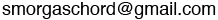

Press kit
Our marketing material in one handy page to make your life easier, yay!
Group members
Bill Anderson, Larry Hamel, Alexandra Langston, Patti Schank, Mia Whitfield, Harold Zable.
Artist profile
Choose a profile for your event, or we can work with you to create a custom profile for your audience.
Promotional example:
Delight your family and friends with a concert from Smorgaschord!
This fun, energetic, award-winning vocal band is happy to entertain at your personal
or corporate event. From ABBA to the Zombies, from Chicago to Pharrell, Smorgaschord performs
six-part harmonies and vocal percussion "a cappella" (without instruments). You may have
seen them singing at Mountain View's Thursday Night Live, the Palo Alto Farmer's Market,
or the 4th of July parade in Redwood City. Private events have included weddings, house
concerts, summer pool parties, and block parties. Bringing an engaging mix of favorite songs,
they have something guaranteed to make you smile.
Cafe example:
Enjoy the wide-ranging styling of Smorgaschord, six singers who combine soaring solos with tight harmonies and vocal percussion. This fun, energetic, award-winning vocal band has been featured at summer festivals from Burlingame to Mountain View and at block parties around the peninsula. With an engaging mix of favorite songs, from ABBA to the Zombies, from Chicago to Pharrell, the three women and three men of Smorgaschord have a song guaranteed to make you smile.
Follow us on
Facebook or
Twitter.
Humor example:
Smorgaschord draws its name from ancient
runic manuscripts of
abundant food and music, the combination of which may lead to harmonic digestion.
Smorgaschord entertains at events around the Peninsula, including summer
festivals, coffee shops, bars, and occasionally, the checkout line
of supermarkets. We could be right behind you in line. Look for the
shoppers with a wide variety of musical styles and poorly-balanced
nutritional choices. Hey, where did you find that
bacon-flavored chocolate? Follow us on
Facebook or
Twitter and get
your shopping cart harmonized.
Discography
(all CDs were self published, back when CDs were a thing that people bought and used)
2023 soundtrack of video "Tell Me a Story"
2020 video "Sound of Silence"
2011 Decade Compilation
2010 Recommended Daily A Cappella
2006 Balance
2004 Jammin'
2002 I Can't Believe I Sang The Whole Thing
See our list of current songs
Highlights
Mia winning "Best Original Song" at Bay Area Harmony Sweepstakes.
Harold winning "Best Original Arrangement" at the Bay Area Harmony Sweepstakes.
Recording the opening soundtrack of a feature film at Potrero Post Studio in San Francisco.
Putting together a video collage during the Covid pandemic.
Getting the crowd to sing along at Freewheel Brewing.
Drawing crowds at Mt. View'sThursday Night Live: "Thank you for the fabulous performance last night. I heard rave reviews from everyone that I spoke to. Hopefully we can coordinate some dates for the event next year." - Michelle, Mountain View Thursday Night Live".
Performances venues include
Freewheel Brewing
Mountain View Thursday Night Live
Burlingame Artzfest
Sequoia High School
Backyard Coffee
Dana Street Roasting Company
Mountain View Art and Wine Festival
Palo Alto Farmers Market
Our Common Ground
Contact



Video

and also the video Tell Me A Story where Smorgaschord provides the soundtrack.
Audio Samples
- Leave It
- She Needs Me
- So Far Away
- How Sweet It Is
- I Can See Clearly Now
- It Could Happen to You
- Chances
Photos
 (7.7 mb)
(7.7 mb)
 (5.4 mb)
(5.4 mb)
 (542 k)
(542 k)